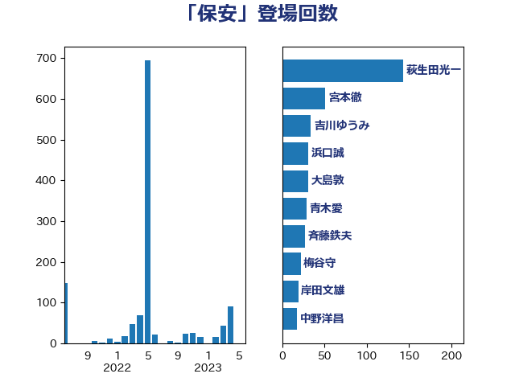

単語「保安」

| 萩生田光一 | 自由民主党 | 143 回 |
| 宮本徹 | 日本共産党 | 51 回 |
| 吉川ゆうみ | 自由民主党 | 34 回 |
| 浜口誠 | 国民民主党 | 31 回 |
| 大島敦 | 立憲民主党 | 31 回 |
| 青木愛 | 立憲民主党 | 29 回 |
| 斉藤鉄夫 | 公明党 | 27 回 |
| 梅谷守 | 立憲民主党 | 22 回 |
| 岸田文雄 | 自由民主党 | 19 回 |
| 中野洋昌 | 公明党 | 18 回 |
| 赤羽一嘉 | 公明党 | 14 回 |
| 落合貴之 | 立憲民主党 | 14 回 |
| 石井章 | 日本維新の会 | 14 回 |
| 森本真治 | 立憲民主党 | 14 回 |
| 井原巧 | 自由民主党 | 14 回 |
| 輿水恵一 | 公明党 | 12 回 |
| 小野泰輔 | 日本維新の会 | 11 回 |
| 竹内真二 | 公明党 | 10 回 |
| 河野義博 | 公明党 | 10 回 |
| 岩渕友 | 日本共産党 | 10 回 |
| 古屋範子 | 公明党 | 10 回 |
| 森屋隆 | 立憲民主党 | 9 回 |
| 末次精一 | 立憲民主党 | 9 回 |
| 山口俊一 | 自由民主党 | 9 回 |
| 齋藤健 | 自由民主党 | 7 回 |
| 鈴木義弘 | 国民民主党 | 7 回 |
| 細田健一 | 自由民主党 | 7 回 |
| 米山隆一 | 立憲民主党 | 7 回 |
| 河西宏一 | 公明党 | 7 回 |
| 小宮山泰子 | 立憲民主党 | 7 回 |
| 室井邦彦 | 日本維新の会 | 7 回 |
| 阿部知子 | 立憲民主党 | 6 回 |
| 竹詰仁 | 国民民主党 | 6 回 |
| 朝日健太郎 | 自由民主党 | 6 回 |
| 福島伸享 | 無所属 | 5 回 |
| 日下正喜 | 公明党 | 5 回 |
| 高木かおり | 日本維新の会 | 4 回 |
| 細田博之 | 自由民主党 | 4 回 |
| 空本誠喜 | 日本維新の会 | 4 回 |
| 田村まみ | 国民民主党 | 4 回 |
| 渡辺猛之 | 自由民主党 | 4 回 |
| 津島淳 | 自由民主党 | 4 回 |
| 林芳正 | 自由民主党 | 4 回 |
| 木原稔 | 自由民主党 | 4 回 |
| 小西洋之 | 立憲民主党 | 4 回 |
| 中根一幸 | 自由民主党 | 4 回 |
| 中川郁子 | 自由民主党 | 4 回 |
| ながえ孝子 | 無所属 | 4 回 |
| 阿達雅志 | 自由民主党 | 3 回 |
| 足立康史 | 日本維新の会 | 3 回 |
| 西村康稔 | 自由民主党 | 3 回 |
| 山田勝彦 | 立憲民主党 | 3 回 |
| 小熊慎司 | 立憲民主党 | 3 回 |
| 小沼巧 | 立憲民主党 | 3 回 |
| 大塚拓 | 自由民主党 | 3 回 |
| 吉井章 | 自由民主党 | 3 回 |
| おおつき紅葉 | 立憲民主党 | 3 回 |
| 高橋光男 | 公明党 | 2 回 |
| 高木毅 | 自由民主党 | 2 回 |
| 階猛 | 立憲民主党 | 2 回 |
| 鈴木宗男 | 日本維新の会 | 2 回 |
| 重徳和彦 | 立憲民主党 | 2 回 |
| 逢坂誠二 | 立憲民主党 | 2 回 |
| 笠井亮 | 日本共産党 | 2 回 |
| 石井浩郎 | 自由民主党 | 2 回 |
| 石井正弘 | 自由民主党 | 2 回 |
| 牧山ひろえ | 立憲民主党 | 2 回 |
| 枝野幸男 | 立憲民主党 | 2 回 |
| 新垣邦男 | 立憲民主党 | 2 回 |
| 市村浩一郎 | 日本維新の会 | 2 回 |
| 川田龍平 | 立憲民主党 | 2 回 |
| 山崎誠 | 立憲民主党 | 2 回 |
| 城井崇 | 立憲民主党 | 2 回 |
| 井坂信彦 | 立憲民主党 | 2 回 |
| 三木圭恵 | 日本維新の会 | 2 回 |
| 鬼木誠 | 立憲民主党 | 1 回 |
| 音喜多駿 | 日本維新の会 | 1 回 |
| 青柳仁士 | 日本維新の会 | 1 回 |
| 長浜博行 | 無所属 | 1 回 |
| 鈴木俊一 | 自由民主党 | 1 回 |
| 谷田川元 | 立憲民主党 | 1 回 |
| 西村智奈美 | 立憲民主党 | 1 回 |
| 若宮健嗣 | 自由民主党 | 1 回 |
| 舞立昇治 | 自由民主党 | 1 回 |
| 美延映夫 | 日本維新の会 | 1 回 |
| 竹内譲 | 公明党 | 1 回 |
| 福山哲郎 | 立憲民主党 | 1 回 |
| 石川博崇 | 公明党 | 1 回 |
| 石井拓 | 自由民主党 | 1 回 |
| 田嶋要 | 立憲民主党 | 1 回 |
| 田島麻衣子 | 立憲民主党 | 1 回 |
| 田名部匡代 | 立憲民主党 | 1 回 |
| 浜野喜史 | 国民民主党 | 1 回 |
| 浜地雅一 | 公明党 | 1 回 |
| 浅川義治 | 日本維新の会 | 1 回 |
| 松本剛明 | 自由民主党 | 1 回 |
| 有村治子 | 自由民主党 | 1 回 |
| 徳永エリ | 立憲民主党 | 1 回 |
| 岡田克也 | 立憲民主党 | 1 回 |
| 山本太郎 | れいわ新選組 | 1 回 |
| 山本佐知子 | 自由民主党 | 1 回 |
| 小沢雅仁 | 立憲民主党 | 1 回 |
| 小林鷹之 | 自由民主党 | 1 回 |
| 安江伸夫 | 公明党 | 1 回 |
| 太栄志 | 立憲民主党 | 1 回 |
| 吉田はるみ | 立憲民主党 | 1 回 |
| 古賀友一郎 | 自由民主党 | 1 回 |
| 古川禎久 | 自由民主党 | 1 回 |
| 勝部賢志 | 立憲民主党 | 1 回 |
| 伊藤孝恵 | 国民民主党 | 1 回 |
| 中島克仁 | 立憲民主党 | 1 回 |
| 三浦信祐 | 公明党 | 1 回 |
| 三上えり | 立憲民主党 | 1 回 |
| 一谷勇一郎 | 日本維新の会 | 1 回 |
| あかま二郎 | 自由民主党 | 1 回 |